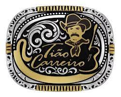
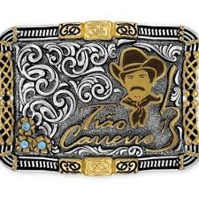
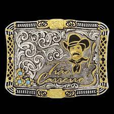

Fivelas



As fivelas de cinto são acessórios de moda essenciais para complementar o visual e adicionar um toque de estilo.
Nesta categoria de Calçados, Roupas e Bolsas, existem várias marcas renomadas que oferecem uma ampla variedade de opções.